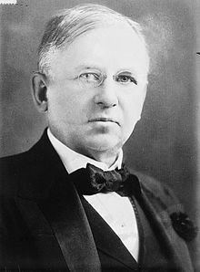

Experimentar
Al revisar la paradoja de la estrategía encontramos que los grandes planes pueden generar un gran desastre, o un gran éxito. Los planes mediocres generan resultados mediocres. Se dice que “un mal plan es siempre mejor que no tener plan”, así que ante la incertidumbre una estrategia del tipo medir y reaccionar parece una alternativa razonable, y probablemente sea más exitosa.
Ahora bien, en muchas situaciones las mediciones no nos dicen lo que queremos saber. Por ejemplo, si estamos planeando una campaña publicitaria. Por ejemplo, un CFO de una importante empresa internacional se lamentaba de que se habían gastado 400 millones de dólares en una campaña de posicionamiento de marca, no de ningún producto en particular, sólo de la marca. La pregunta era saber cuán efectivo fue ese gasto. No podía saber si la efectividad había sido 400 millones o cero. El CFO no estaba diciendo que el gasto en publicidad no hubiera sido efectivo, sino que no tenía idea de cuan efectivo había sido. Era totalmente posible que si no hubieran gastado un centavo su desempeño como compañía habría sido el mismo, pero probablemente si no gastaban esos millones quizás se habrían enfrentado a un desastre.
Ahora, 400 millones de dolares nos parece una monstruosidad, pero consideren que al año las corporaciones norteamericanas gastan 500 mil millones de dólares en marketing. Entonces es evidente preguntarse cuanto de este dinero produce efectos sobre los consumidores. ¿Alguien tiene idea?

A fines del siglo XIX el magnate norteamericano John Wanamaker, considerado por algunos como el pionero del marketing moderno, se quejaba de que:
“la mitad del dinero que gasto en publicidad se pierde, lo malo es que no sé cual mitad”
Wanamaker era considerado un genio del avisaje, y un pionero de las tiendas por departamentos, introduciendo conceptos como la devolución del dinero como garantía. Se le consideraba un empresario honesto, ofrecía a sus empleados cuidados médicos gratuitos, educación, espacios de recreación y planes de pensión y distribución de ganancias. Aunque se oponía fieramente a la sindicalización.
Mucho de lo que se hace en retail hoy en día para llamar la atención de los consumidores ya lo había probado Wanamaker en la década de 1860.
Entonces, a pesar de todos los avances que hemos logrado en ciencia y tecnología, la pregunta de Wanamaker sigue vigente. El CFO mencionado anteriormente sigue con la misma duda que el magnate de fines del siglo XIX.
No es que no contemos con mejores mediciones, al contrario, desde los tiempos de Wanamaker tenemos muchas empresas que se encargan de medir, las tiendas tienen sus bases de datos de clientes, y sistemas CRM, inteligencia de negocios. Existen agencias de rating como Nielsen, o ComScore, que miden el flujo de clicks sobre los avisajes digitales. Tenemos mucha información, pero el problema es que los avisadores quieren saber si los avisos causan un aumento en las ventas, pero casi siempre lo que se obtiene es una correlación entre avisos e incremento en ventas.
“Correlación no implica causalidad”, eso debería ser claro, pero nos confundimos. Como cuando la gente hace dieta. Cuando la gente hace dieta y baja peso inmediatamente lo atribuye a la dieta. Pero ocurre que aparte de hacer dieta la gente que entra en un programa de baja de peso además empieza a hacer ejercicios, o cambia sus hábitos, como las horas en que come, o su rutina de descanso, incluso se preocupa más sobre lo que come. Entonces cualquiera de esos cambios, o la combinación de estos, es probablemente la responsable de la pérdida de pesos, más que la elección de una dieta.
En el avisaje pasa lo mismo. Los avisadores anticipan su gasto de publicidad en función de ventas futuras, o empiezan a gastar más en temporadas peak, como cuando se acercan las fiestas. Entonces en esos escenarios las ventas y el avisaje tendrán una correlación, aunque el avisaje no genere nada especial (en Navidad la gente igual irá a comprar, independiente de la campaña publicitaria), o pueden haber otros factores externos que causan esta mayor venta, y que no necesariamente están relacionados con el avisaje.
Así que diferenciar correlación de causa es difícil, en general. Una posible solución es realizar un experimento. Si queremos medir la efectividad de un “tratamiento” (dieta, o campaña de avisos), debemos aplicarlo en algunos casos y no en otros (el grupo de control). Al igual de como se hace con la evaluación de los nuevo medicamentos. A algunos pacientes se le aplica el medicamento, y a otros se les entrega un placebo. Sólo si la gente con el tratamiento tienen una mayor frecuencia de mejora entonces se aprueba la nueva droga.
En el mundo del avisaje en linea se ha detectado que los anuncios patrocinados que aparecen en los resultados de una búsqueda, tienen más éxito que los que se colocan en los sitios web. La razón es que los anuncios patrocinados depende fuertemente de lo que estabas buscando. Las personas que buscan sobre problemas en su auto harán click sobre anuncios de talleres mecánicos en su área.
Es la base de la riqueza de Google, y porque esa publicidad puede ser más efectiva que la que aparece colgada en Facebook, en Gmail, o la que ven en el costado de este mismo blog. Cuando busco estoy más predispuesto a la publicidad que cuando simplemente navego por internet.
Esto es entendido mal, porque los avisadores pagan un premio por alcanzar a los consumidores que son los más probables consumidores de sus productos. Es lo que se llama el avisaje dirigido. Donde se trata de segmentar al consumidor. Lo que no se dan cuenta es que esos consumidores comprarán sus productos de todas maneras. El valor de esa publicidad sólo está en el consumidor marginal, aquel que no habría comprado el producto de no haber visto la publicidad. La única manera de determinar el efecto de la publicidad en los consumidores marginales es conduciendo experimentos, en que la decisión de quién ve el aviso y quién no, es determinada por el azar.
Eso es difícil de hacer en publicidad tradicional, como los avisos en la carretera, o en una revista. Pero es posible en el mundo electrónico. Hay un experimento comentado por Duncan J. Watts1, realizado por sus colegas en Yahoo, David Reily, Taylor Schreiner, y Randall Lewis: Advertising Works.
Se trata de un experimento de campo con 1.6 millones de clientes de una cadena de retail que también eran usuarios activos de Yahoo!. Para realizar el experimento, Reiley y su equipo asignaron a 1.3 millones de usuarios al grupo de “tratamiento”, los que al llegar a un sitio operado por Yahoo! se les mostraría anuncios del retailer. Los otros 300.000 quedaron asignados al grupo de control, es decir, nunca verían la publicidad, aunque visitaran exactamente las mismas páginas del grupo anterior. Dado que la asignación fue al azar las diferencias tenían que darse por el desempeño del aviso en si mismo, como los usuarios además estaban en las bases de datos de la empresa, el efecto del aviso podría medirse en términos de compras reales.
Usando este método los investigadores estimaron que el ingreso adicional generado por los avisos era rigurosamente cuatro veces el costo de la campaña en el corto plazo, y probablemente más alto en el largo plazo. Por lo tanto, concluyeron que la campaña había sido de hecho efectiva, buenas noticias para el retailer y para Yahoo!. Pero también descubrieron que casi todo el efecto fue sobre los clientes de más edad. Los avisos casi no tuvieron efecto alguno sobre los menores de 40 años. Esto que parece malo es una ventaja, porque el experimento nos dice que aquí hay algo que no funciona con los jóvenes y podemos conducir nuevos experimentos para cautivar su atención. Pero aún así, si no se consiguen resultados con el consumidor joven podemos ver si es la marca la que no atrae a este público, o la publicidad en linea es ignorada por este grupo. Cualquiera sea el resultado, al menos el avisador sabe que no vale la pena gastar dinero en este segmento y concentrar sus recursos en el segmento que si es sensible a los avisos.
Por lo tanto los experimentos deben ser vistos como una manera de ir aprendiendo, son parte de un proceso permanente. No se debe esperar de estos la respuesta definitiva. Probablemente generen nuevas interrogantes, pero permiten realizar ciertas discriminaciones que ayudan a eficientar el uso de recursos.
Estos experimentos están siendo usados cada vez más, no sólo en el marketing en linea, también en el diseño de interfaces de usuario, o en el diseño de la navegación de sitios webs. En las ciencias sociales, para medir la eficacia de ciertas políticas públicas, y en las empresas para medir esquemas de compensación por desempeño. El potencial de los experimentos es enorme, y claramente deberían ser usados más.
-
Duncan J. Watss. Everything Is Obvious: *Once You Know the Answer
↩︎